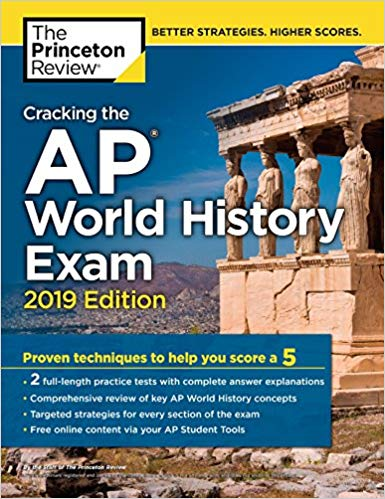

This is one of those classes where they push so much information at one time that it's hard to keep up with the important events that happened in every time period. For the exam, you do need to know about most of the things that happened in each time period, but some units are more important than others especially units 3, 4, and 5 (Land-Based Empires, Transoceanic Interconnections, and Revolutions). This exam consists of 55 multiple choice questions, a short-answer question, a DBQ, and a long essay question. In order to make sure you remember all the content, here are some resources you can use.
Review Books
This AP World History book will help you score a perfect 5 on the exam as it
offers a study guide that will help you be a little more prepared for
the exam.
This book also provides content similar to what you're learning
in class and emphasizes on the important info needed
for the exam. This AP History
book provides testing strategies for pacing yourself and guessing logically.
It
also gives access to online study plans, list of key terms and concepts, helpful pre-college
information, and more.
I heavily recommend getting some time of review book